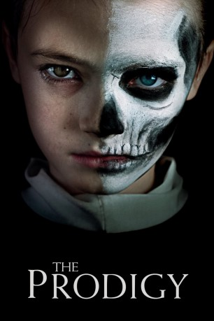

#11265 The Prodigy
 
 IMDB-Wertung: 5.9 / 10
IMDB-Wertung: 5.9 / 10  Tomatometer: 44
Tomatometer: 44  Metascore: 45
Metascore: 45 
Das beunruhigende Verhalten ihres jungen Sohnes Miles deutet darauf hin, dass eine böse, womöglich übernatürliche Kraft von ihm Besitz ergriffen hat. Sarah muss sich entscheiden zwischen ihrem Mutterinstinkt, Miles zu lieben und zu schützen und dem verzweifelten Verlangen herauszufinden, was – oder wer – dafür verantwortlich ist. Sie wird gezwungen, in der Vergangenheit nach Antworten zu suchen und nimmt das Publikum mit auf einen wilden Ritt, bei dem die Grenze zwischen Wahrnehmung und Realität erschreckend unklar wird.
Jahr: 2019
Dauer: 92 Minuten
FSK: 16
Land: USA Studio: Orion PicturesTonspuren: DTS - ,
Untertitel: Deutsch,
Auflösung: 1080p (1920x808) Größe: 4116 MB
Genre: Thriller, Horror
Regisseur: Nicholas McCarthy
Drehbuch: Jeff Buhler
Soundtrack: Joseph Bishara
Darsteller:
 Taylor Schilling als Sarah Blume
Taylor Schilling als Sarah Blume- Jackson Robert Scott als Miles Blume
 Colm Feore als Arthur Jacobson
Colm Feore als Arthur Jacobson- Paul Fauteux als Edward Scarka
 Brittany Allen als Margaret
Brittany Allen als Margaret- Peter Mooney als
- Paula Boudreau als
 Elisa Moolecherry als
Elisa Moolecherry als - Olunike Adeliyi als
- Janet Land als
 Martin Roach als
Martin Roach als - Byron Abalos als
- Ashley Black als
- Nicholas McCarthy als
 Jim Annan als
Jim Annan als  Milton Barnes als
Milton Barnes als - Michael Dyson als
- Mark Sparks als
 Martha Girvin als
Martha Girvin als - Ava Augustin als
- David Kohlsmith als
- Tristan Vasquez als
- Grace Armas als
- Brock Johnson als
- Olivia Croft als
- Alexander Campos als
- Andrew MacDonald als
- Chris Scian als
Datei: X:\2019(N-Z)\Prodigy, The (2019, FSK16, 1920x808).mkv seit 06.06.2019
Festplatte: HD 2018(G-Z)-2019(A-Z)
 Es gibt insgesamt 62 Filme in der Gruppe '2019(N-Z)'
Es gibt insgesamt 62 Filme in der Gruppe '2019(N-Z)'